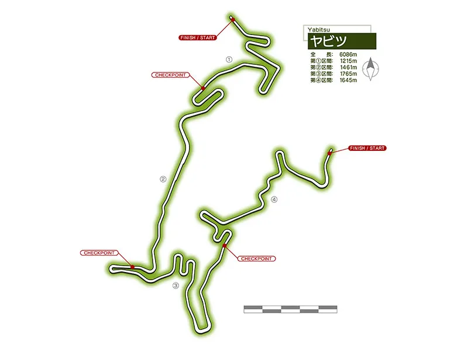
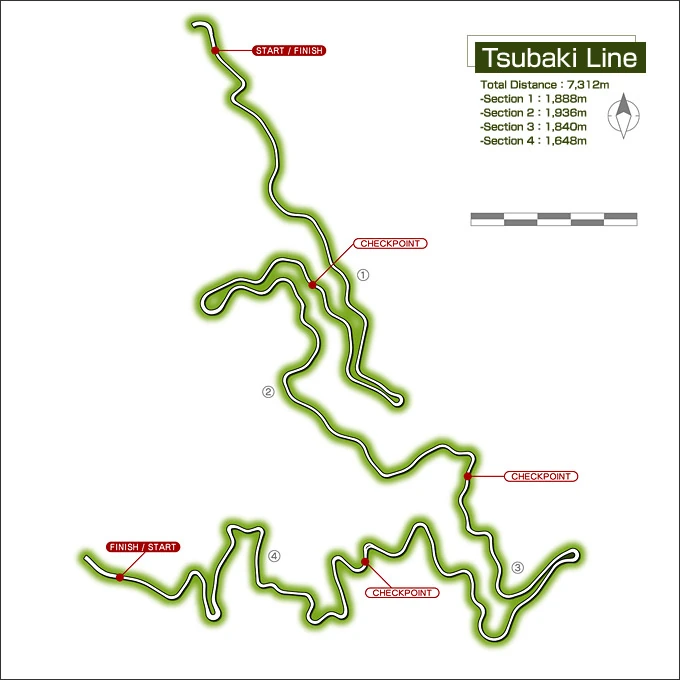

Kanagawa
Kanagawa is a place where the drive always feels like a challenge. Just south of Tokyo, the prefecture blends the pulse of the city with the thrill of mountain roads, offering a driving experience that never gets boring. In cities like Yokohama, the streets are wide and busy, and you can feel the tension of urban speed as you weave through traffic, trying to outmaneuver everyone else. But it’s when you head into the hills and coastal routes that the real excitement begins.
The Hakone Turnpike is one of the toughest in Kanagawa—its steep climbs and sharp corners make it a place for those who know how to handle a car. The road twists through dense forests, and every hairpin feels like a test. If you’re not careful, the tight turns can catch you off guard, forcing you to find that perfect balance between speed and control. The climb is relentless, and there’s no room for mistakes. Master the pass, though, and you know you've proven yourself.
Heading south along the coast, the roads hugging Sagami Bay and the Izu Peninsula offer a different challenge. These roads are narrow, with blind corners that demand precision and focus, but the views of the ocean and Mount Fuji in the distance add to the intensity. The risk of slipping on the corners is always there, but when the road opens up, it’s an adrenaline rush like no other.
Further inland, the quiet mountain roads around Atsugi and Hadano offer a different kind of challenge—narrow, winding, and often slippery. These roads are less traveled, but they demand just as much focus, with each turn testing your reflexes and car control. Kanagawa’s roads are as varied as they come, with every corner offering a new test, and every stretch of highway rewarding those who can master it. Whether it's the urban chaos of Yokohama or the winding mountain passes, Kanagawa is a prefecture where only the most skilled drivers thrive
Yabitsu
Yabitsu (ヤビツ峠) is 761 meters above sea level, located in Kanagawa, Japan. It was the home course of Team 246. The course is known for having multiple points at which one of the two lanes suddenly merge into one
Important Battles
Racers |
Cars |
Specialization |
|---|---|---|
Takumi Fujiwara vs Satoshi Omiya |
AE86 vs Mazda Roadster RS |
Downhill |
Keisuke Takahashi vs Kobayakawa |
FD3S vs Lan Evo VII |
Uphill |
Extra information
Yabitsu Pass, located in the mountains of Kanagawa Prefecture, is one of the most well-known and challenging roads for driving enthusiasts in the region. Offering a mixture of long, sweeping curves and tight hairpins, the pass has become a favorite for those seeking to push their cars to the limit while navigating one of Japan’s iconic mountain routes. With its steep inclines and unpredictable terrain, Yabitsu is not a place for the faint of heart; it demands precision, focus, and a solid understanding of your car’s handling.
The road is narrow and winding, cutting through dense forests and steep hills. The constant elevation changes add an extra layer of complexity, as the tight corners come at you quickly and the grades vary significantly, often making it difficult to maintain speed or traction. The surface is generally good but can become slippery after rain, and debris from the surrounding forest can also present an unexpected challenge.
What makes Yabitsu so appealing to experienced drivers is the rhythm of the road. Every turn demands attention, whether it’s a sharp hairpin or a long, sweeping curve. The pass requires you to be in constant tune with the car, adjusting throttle, steering, and braking to maintain control. The key is to know the road well—anticipating the next turn and finding the right balance between speed and stability. While it may not have the sheer danger of some other passes, Yabitsu's unrelenting series of curves offers a real test of skill and car control.
But perhaps the true thrill of Yabitsu is how it builds. As you gain confidence with each turn, the road becomes a dance—a symbiotic connection between you and the machine. With every corner you master, you start to feel the rhythm of the pass, the engine’s growl echoing off the cliffs, and the tires gripping the pavement with a perfect balance. For those who’ve driven Yabitsu enough, it feels almost like an extension of the road itself—a challenge to be met with a steady hand and a sharp mind.
Whether you're chasing the perfect time or simply enjoying the drive, Yabitsu Pass is a road that tests your mettle, forcing you to focus on every detail. It’s a place where drivers who know their limits can push them further, gaining satisfaction not from raw speed, but from the mastery of the road. Conquer Yabitsu, and you’ve earned the respect of any true enthusiast.
Nagao Pass

Nagao (長尾) is the home course of Racing Team Katagiri Street Version. It spans through Hakone and Gotemba, in the Kanagawa and Shizuoka prefectures. It is also where Takumi had a rematch with Kai (after the latter lost to the former in Irohazaka) and Keisuke had his race against Minagawa.
Important Battles
Racers |
Cars |
Specialization |
|---|---|---|
Takumi Fujiwara vs Kai Kogashiwa |
AE86 vs Toyota MR-S |
Downhill |
Keisuke Takahashi vs Hideo Minagawa |
FD3S vs Supra MKIV |
Uphill |
Extra information
Nagao Pass, located in the mountainous regions of Kanagawa Prefecture, is one of those roads that quickly earns the respect of anyone who dares to take it on. This narrow, twisting route is often overlooked by casual drivers, but for those who know its reputation, it’s a true test of skill and focus. The pass climbs steeply through dense forests, with sharp hairpin turns and blind corners that demand total control and precision.
The road surface can be unpredictable, with sudden dips, gravel patches, and occasional loose debris, making it especially tricky when weather conditions change. On dry days, it’s a fast-paced challenge, requiring quick shifts and calculated throttle control to maintain speed while navigating the tight bends. On rainy days, however, Nagao transforms into a far more dangerous route, as the risk of sliding on slick corners increases, and every turn feels even more precarious.
What makes Nagao Pass particularly challenging is its combination of tight corners and steep grades, which demand both technique and patience. There are moments where the road straightens, allowing drivers to open up the throttle, but it’s never for long. Before you know it, the next curve comes up fast, requiring you to adjust your speed and line with precision. It’s a road that rewards those who can anticipate the next move, where knowing the road and your car’s limits is key to conquering it.
Nagao Pass is a favorite for those seeking a more technical challenge. It’s not about the longest straightaways or the fastest speeds; it’s about mastering every turn, feeling the car grip the road, and anticipating the changes in elevation. Conquering this pass isn’t just about racing to the finish—it’s about the satisfaction of navigating a road that demands respect, and knowing you’ve come out on top.
Nanamagari

Nanamagari (七曲り) is the home course of Team Spiral. It is part of the Old Tōkaidō that spans Hakone and Odawara in the Kanagawa prefecture. It is perhaps well known for its 13 consecutive hairpins.
Project D's penultimate battle with Team Spiral was held here during the foggy post-rain weather.
Nanamagari in Japanese means 'Seven' (Nana) and 'turns' (Magari, a form of the verb Magaru, which means 'to bend') referring to the seven hairpins in the course, despite the fact that there are actually thirteen hairpins in the course.
Important Battles
Racers |
Cars |
Specialization |
|---|---|---|
Takumi Fujiwara vs Hiroya Okuyama |
AE86 vs Silvia S15 |
Downhill |
Keisuke Takahashi vs Ryuji Ikeda |
FD3S vs Nissan Z33 |
Uphill |
Extra information
The road itself is often tight and treacherous, with steep inclines and sudden drops that make it feel like the road is constantly trying to push you off balance. The high-speed sections are rare, as the constant twists demand sharp braking and controlled acceleration. It's a road that punishes those who are too aggressive, but rewards those who can stay smooth, fluid, and in tune with the rhythm of the road.
What sets Nanamagari apart is the unpredictability of each turn. You may think you know the road, but the sharpness of the curves often catches you off guard, demanding a reaction that’s almost instinctive. The turns are often blind, meaning you need to trust your experience, as well as the feel of the road beneath you. One wrong move and you could lose your line, but take it with precision, and you’ll flow from one turn to the next, feeling the car respond to every shift in direction.
On a good day, Nanamagari feels like a perfect dance between driver and road—every turn feels like an extension of yourself, every flick of the wheel an expression of control. But even the most skilled drivers know that there's no room for complacency. The pass is always there, lurking, waiting for that moment when you drop your guard, and that’s when it strikes. Whether you’re chasing the thrill of speed or the satisfaction of mastering a technical route, Nanamagari is a road that demands full attention, offering up a challenge that only the most focused and skilled can conquer.
Tsubaki Line
The Tsubaki Line (椿ライン, Tsubaki Rain) is the home course of Sidewinder. It is located in Yugawara, Kanagawa, near the Hakone Turnpike. The uphill battle (between Go Hojo and Keisuke Takahashi) and the downhill battle (between Takumi Fujiwara and Shinji Inui) happened here. It is one of the longest course at 13.1 km.
The top of the pass houses the Daikanzan Observation Deck, which connects the Tsubaki Line and the Toyo Tires Turnpike. It is also where Project D mechanics gather and tune the cars before their final battles start.
Important Battles
Racers |
Cars |
Specialization |
|---|---|---|
Takumi Fujiwara vs Shinji Inui |
AE86 vs AE86 |
Downhill |
Keisuke Takahashi vs Do Hojo |
FD3S vs Honda NSX |
Uphill |
Extra information
The Tsubaki Line is a hidden gem among the mountain roads of Kanagawa Prefecture, a route that demands respect from anyone who dares to take it on. This narrow, twisting stretch of road, nestled in the hills near the town of Tsubaki, is infamous for its sharp corners, unpredictable elevation changes, and unforgiving surfaces. While not as well-known as some of the more famous mountain passes, the Tsubaki Line offers a unique challenge, where speed, technique, and control come together in a test of true driving skill.
The road is tight, with numerous hairpin turns that come at you fast, forcing you to adjust your line and braking with each bend. It’s a road that rewards precision, requiring drivers to balance their speed through each curve while maintaining control over the car's handling. The road surface varies, and at times it’s rough or uneven, adding an extra layer of difficulty. It’s not a place for those who rush or cut corners—every turn demands careful input, from throttle to brake to steering, to keep the car planted and moving in the right direction.
What makes the Tsubaki Line stand out is its rhythm. The route is full of sudden elevation changes, blind corners, and steep inclines, meaning there’s little room to relax. The sharp, rapid succession of turns keeps you constantly on edge, demanding quick reflexes and deep concentration. For those who know it well, the Tsubaki Line is a road that rewards experience—a place where knowing the right braking point, the right line through a corner, and the right moment to accelerate can make the difference between a smooth drive and a disaster.
In a way, the Tsubaki Line feels like a secret test, a place where only the truly skilled can conquer its every twist and turn. Whether you’re running it as a solo challenge or racing against another driver, the line is unforgiving. It’s a road that rewards finesse over brute force, where the true thrill lies not in the speed, but in the mastery of every curve, every elevation change, and every shift of the wheel. For those who can conquer it, the Tsubaki Line offers the satisfaction of knowing you’ve truly mastered one of Kanagawa’s most demanding, yet rewarding, mountain roads.
MAIN MENU